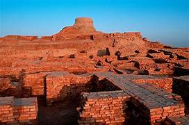
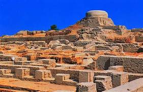
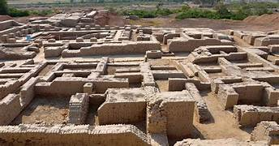
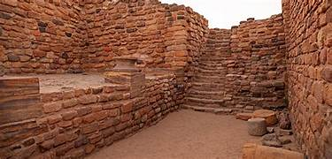
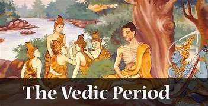
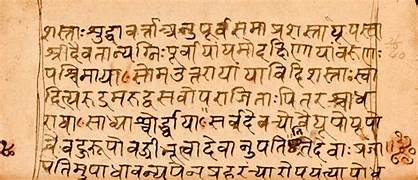
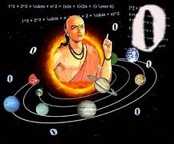

Historical Timeline
Journey through the rich tapestry of India's history from ancient civilizations to modern times

Indus Valley Civilization
3300 BCE - 1300 BCE
One of the world's earliest urban civilizations alongside Ancient Egypt and Mesopotamia, the Indus Valley Civilization was characterized by sophisticated urban planning, advanced drainage systems, standardized weights and measures, and remarkable craftsmanship.
Key Developments
- Advanced urban planning with grid-pattern streets
- Sophisticated water management and sewage systems
- Development of writing (still undeciphered)
- Trade networks extending to Mesopotamia
- Remarkable standardization of weights and measures
Notable Sites

Mohenjo-daro

Harappa

Dholavira

Vedic Period
1500 BCE - 500 BCE
The Vedic Period saw the composition of the Vedas, India's oldest sacred texts, and the development of early Hinduism. This era witnessed the transition from a semi-nomadic pastoral society to settled agricultural communities and the emergence of complex social structures.
Key Developments
- Composition of the four Vedas: Rigveda, Samaveda, Yajurveda, and Atharvaveda
- Development of Sanskrit language
- Emergence of the varna (caste) system
- Rise of Mahajanapadas (great kingdoms)
- Early philosophical inquiries through Upanishads
Cultural Achievements

Sacred Texts

Ritual Practices

Early Astronomy